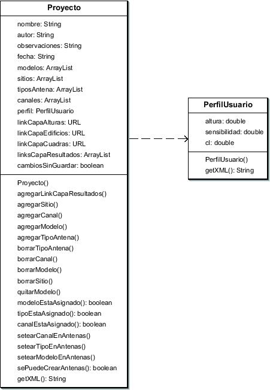

Siguiente: El paquete capas
Subir: Arquitectura de paquetes
Anterior: El paquete principal
Índice General
La representación de un proyecto se hizo mediante la clase
Proyecto (ver figura 8.3).
Básicamente un proyecto contiene:
- Datos generales (nombre, fecha, autor y observaciones).
- Un perfil de usuario, que contiene los valores de C/I mínima aceptable,
el umbral de cobertura y la altura del receptor.
- El conjunto de modelos de propagación, es decir, implementaciones basadas en la lista de
modelos soportados.
- El conjunto de tipos de antenas, en general asociados con un patrón
de radiación.
- El conjunto de canales de frecuencias.
- La dirección URL (Universal Resource Locator) del archivo que contiene los datos de altura de
terreno.
- El URL del archivo que contiene los datos de manzanas.
- El URL del archivo que contiene los datos de
edificaciones.
- El conjunto de los sitios. Estos a su vez incluyen las
radiobases que contienen las antenas.
- El URL de las carpetas que contienen las
predicciones guardadas.
Figura 8.3:
Diagrama parcial de clases del paquete
proyecto
|

|
Siguiente: El paquete capas
Subir: Arquitectura de paquetes
Anterior: El paquete principal
Índice General
SAPO